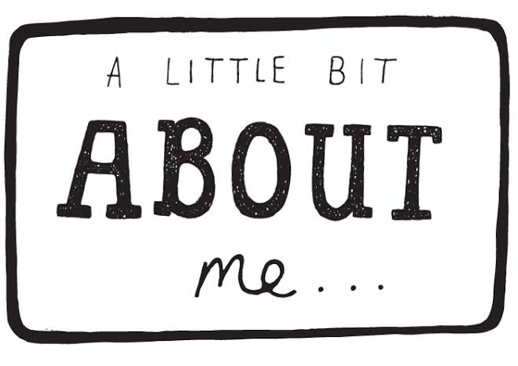

Work
I am a software engineer & designer by profession. Also with the passion of Mural Artist.

About
I am Monika Soni From Rajasthan currently persuing M.C.A from KIIT. My hobbies are graphic designing and painting.
Contact
Insta: @monika_agroya ;Fb:Deactivated ;Whatsapp no.: 9983047811